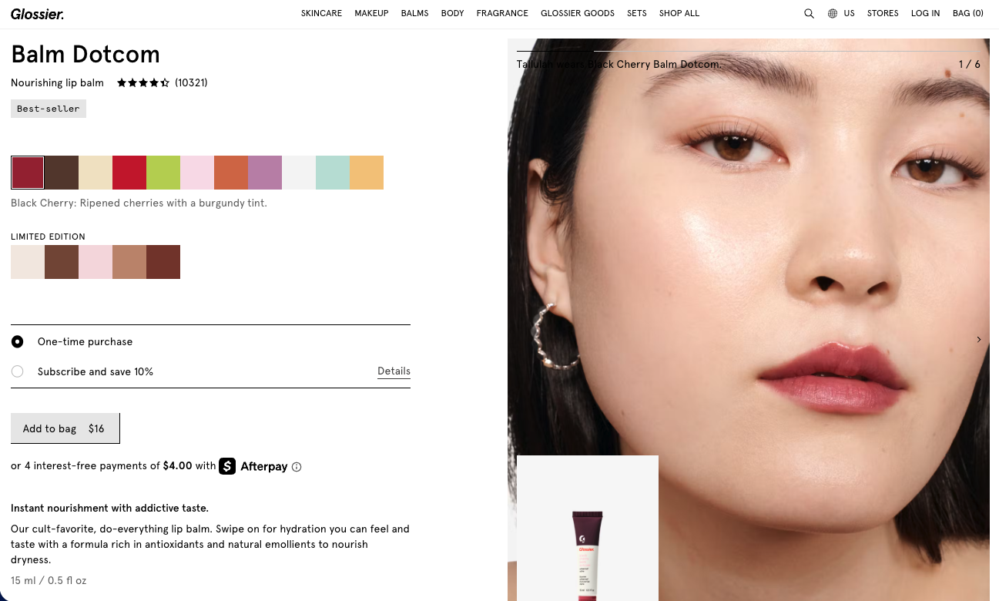

Glossier Went Full Pink
Design Direction
A self-initiated challenge to reinterpret Glossier’s brand page through a bolder visual lens. I explored a more saturated, statement-driven pink palette while preserving the brand’s soft typography, airy spacing, and approachable tone.
